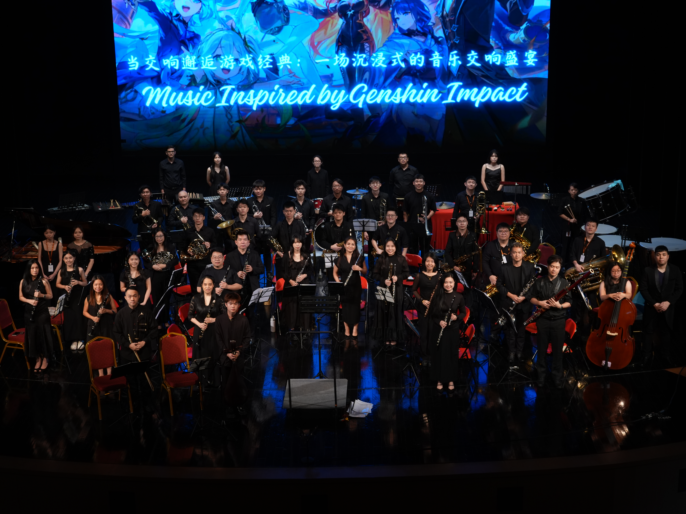
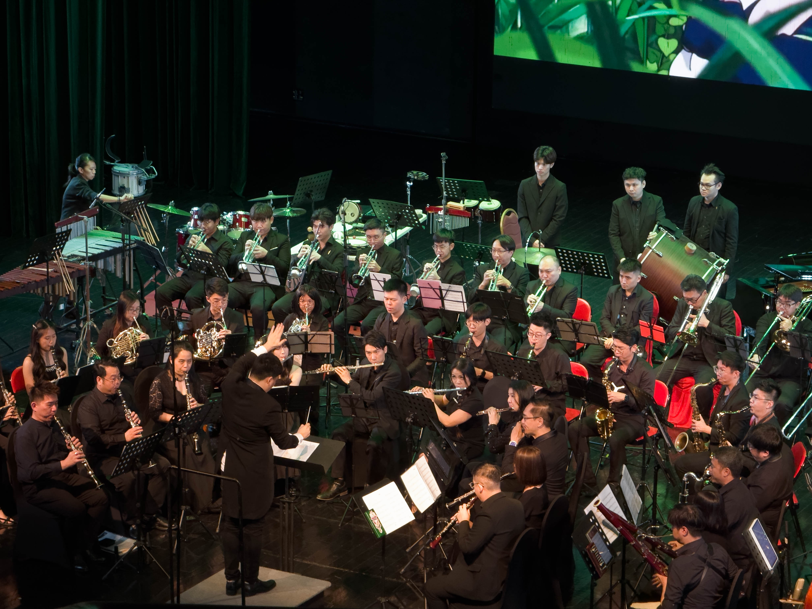
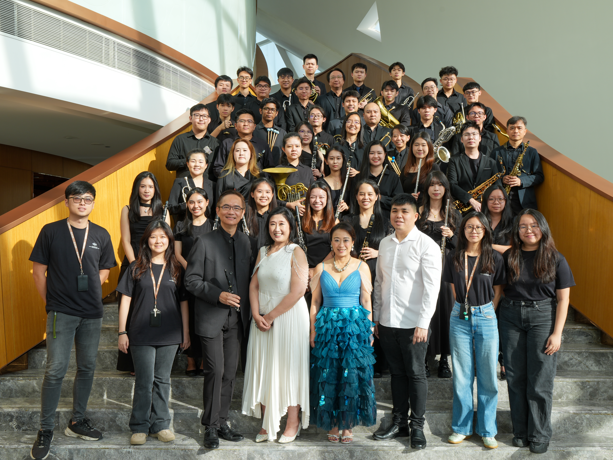
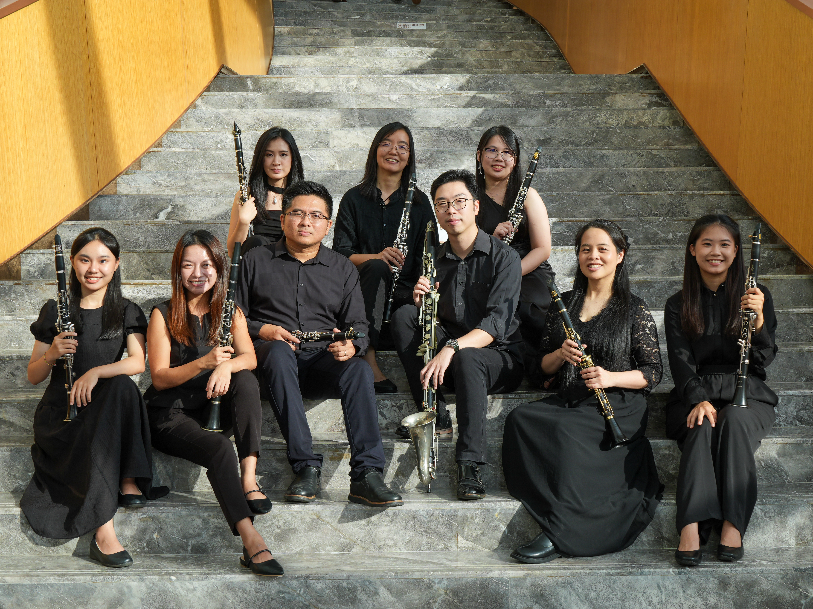
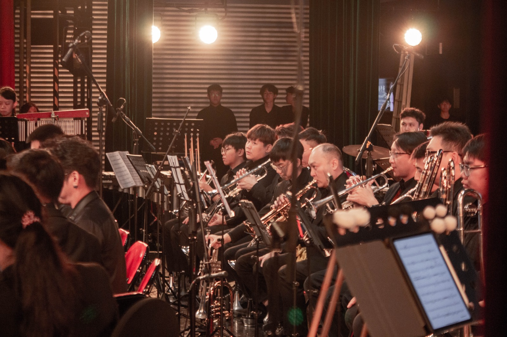
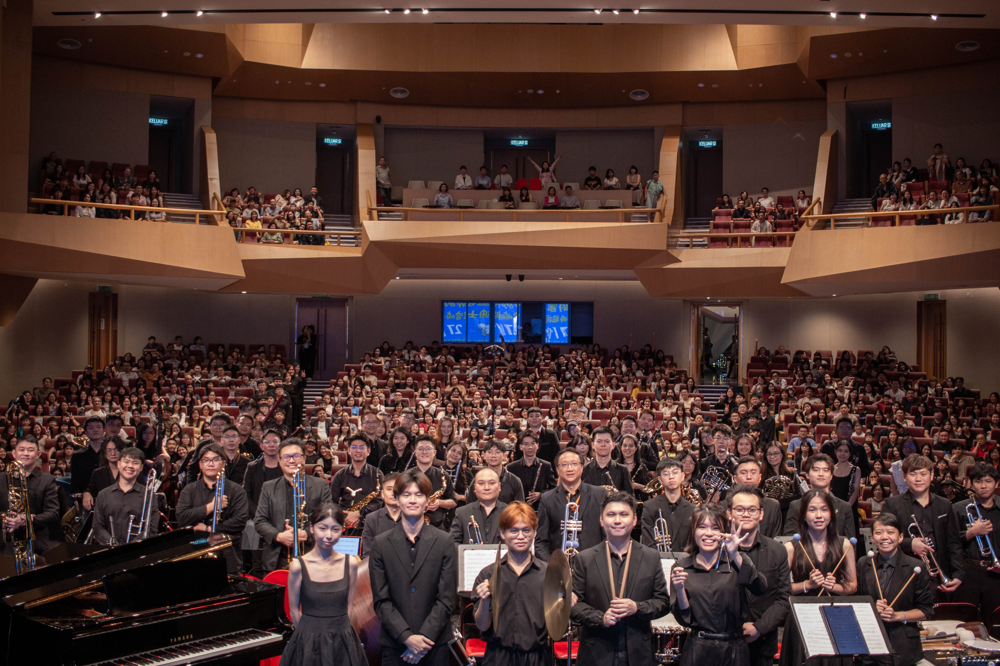

2024
The Beginning
The ensemble takes shape with a clear purpose: bringing committed musicians together in a strong musical community.

02 / About R & F Princess Cove Opera House Symphonic Band
The R & F Princess Cove Opera House Symphonic Band brings experienced musicians together for ambitious performance, musical development and a shared standard of excellence.
The ensemble brings musicians together through disciplined rehearsal, expressive performance and a shared commitment to music.
03 / The Sound
Performance · Precision · Expression

The ensemble balances precision, energy and expression across concert repertoire and collaborative performance.
04 / Our Journey
The ensemble takes shape with a clear purpose: bringing committed musicians together in a strong musical community.
Early performances establish a growing presence through concerts, collaborations and community events.
New musicians and programmes strengthen the ensemble and broaden its connection with the community.
The R & F Princess Cove Opera House Symphonic Band continues to develop its musicianship, repertoire and connection with audiences.
The ensemble continues building new repertoire, new experiences and stronger connections with its community.
05 / At a glance
07 / Gallery




08 / Interested in joining?
Interested musicians can use the contact information provided by the organisation to learn more about membership and enquiries.